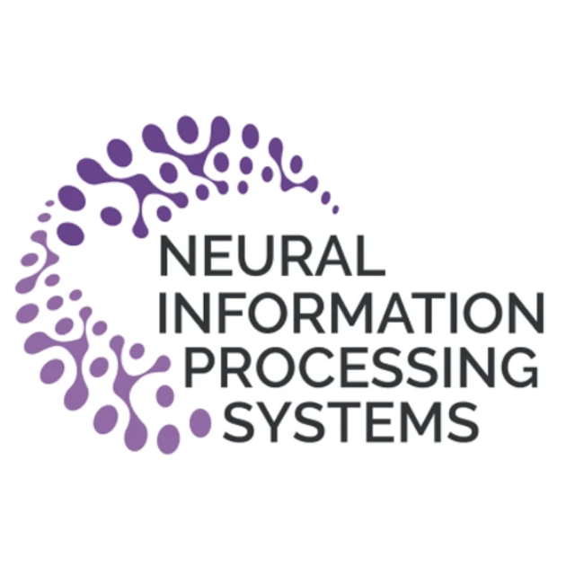
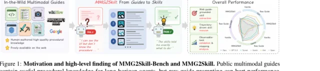
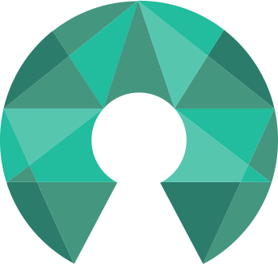

Hi there! I am Yunfei Ge, a master's student in Computer Engineering at Northwestern University, where I am fortunate to be advised by Prof. Manling Li at the MLL Lab and mentored by Qineng Wang on spatial reasoning and multimodal agents. I am also grateful to work under the guidance of Prof. Michael Yip at UCSD ARCLab on embodied AI and robot learning. During my undergraduate study, I feel thankful to be advised by Prof. Yao(Mark) Mu from Shanghai Jiao Tong University ScaleLab.
Looking for a Fall 2027 PhD opportunity. Please feel free to reach out!
News
- Our paper MMG2Skill released as a preprint.
- Started M.S. studies and research at Northwestern University.
Selected Work
Publications

MMG2Skill: Can Agents Distill In-the-Wild Guides into Self-Evolving Skills?
arXivResearch & Work
Experience
Sep 2025 - Present
Research Intern · MLL Lab, Northwestern University
Nov 2025 - Dec 2025
AI Engineer Intern · Wegwiser
Apr 2025 - Sep 2025
Research Intern · Scale Lab, Shanghai Jiao Tong University
Apr 2025 - Aug 2025
AI Engineer Intern · Duo LuoLuo
Nov 2023 - May 2024
Software Engineer Intern · SAIC Maxus
Apr 2022 - Apr 2023
Vision Group Member · RoboMaster Robotics Competition
Sep 2021 - Apr 2022
Mechanics Group Member · RoboMaster Robotics Competition
Leadership & Outreach
Community Service
Sep 2023 - Sep 2024

Shanghai University Open Source Community
Chief Marketing Officer (CMO)
Background
Education
2027 - 2031
Ph.D. Study
Planned next step
2025 - 2027
Northwestern University
M.S. in Computer Engineering
2021 - 2025
Shanghai University
B.Eng. in Computer Science and Technology